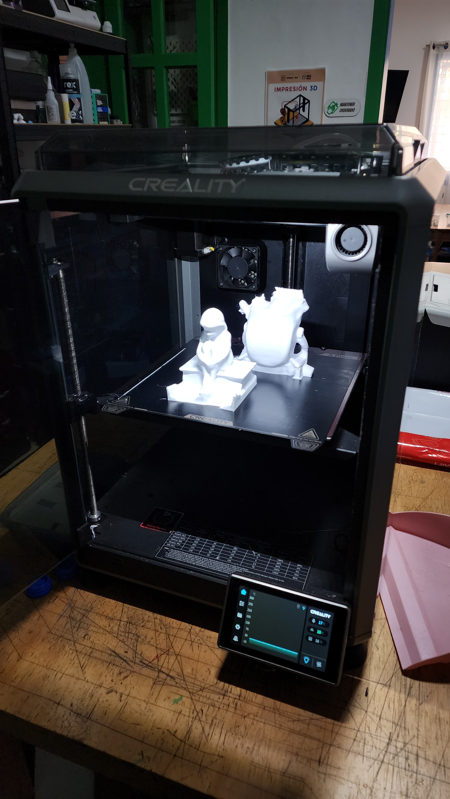
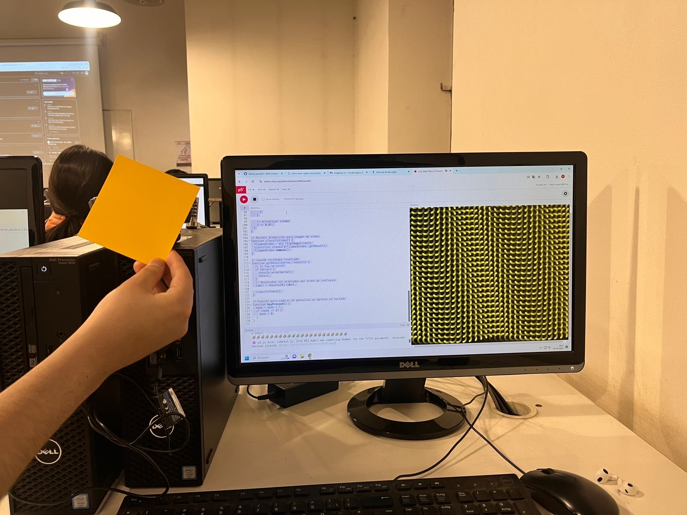
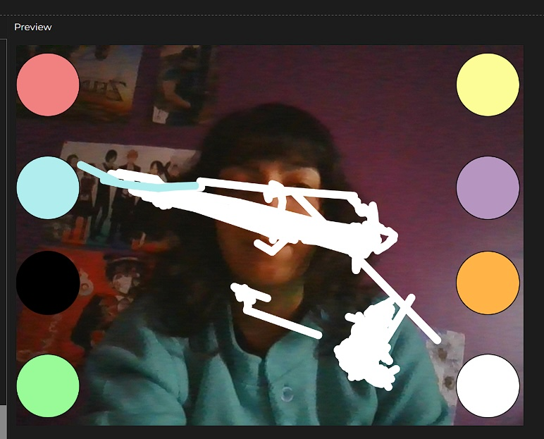

universidad de chileuniversidad de chile
facultad de arquitectura y urbanismofaculty of architecture and urbanism
escuela de diseñodesign school
segundo semestre 2023 (agosto - diciembre)second semester 2023 (august - december)
primer semestre 2024 (marzo - julio)first semester 2024 (march - july)
segundo semestre 2024 (agosto - diciembre)second semester 2024 (august - december)
curso electivo de diseño, donde estudiamos los fundamentos de inteligencia artificial, desde crear nuestras propias bases de datos, hasta entrenar nuestros propios algoritmos generativos.elective course of design, where we study the foundations of artificial intelligence, from creating our own databases to training our own generative algorithms.
aprenderemos a construir nuestras propias bases de datos de imágenes, sonido y poses humanas, para crear nuestras propias instalaciones interactivas. usaremos las herramientas Wekinator y ml5-ks para privilegiar el trabajo en navegdaores web y de uso privado.we will learn how to build our own image, sound and human pose databases, in order to create interactive installations. we will use Wekinator and ml5.js for privacy-first and browser-based work.
el trabajo se hace de forma pública y compartida, con les estudiantes compartiendo sus apuntes y realizando trabajos grupales de investigación aplicada.all the work will be done in public, collaboratively, with the students sharing their notes and applied research.
aarón montoya-moraga: profesore, creador del cursoprofessor, creator of the course
ignacio passalacqua: ayudante (2023-2)teaching assistant (2023-2)
joaquín pérez: ayudante de pregrado (2023-2)undergraduate assistant (2023-2)
ricardo ramírez: ayudante de pregrado (2024-1)undergraduate assistant (2024-1)
vick clavería: ayudante de pregrado (2024-2)undergraduate assistant (2024-2)